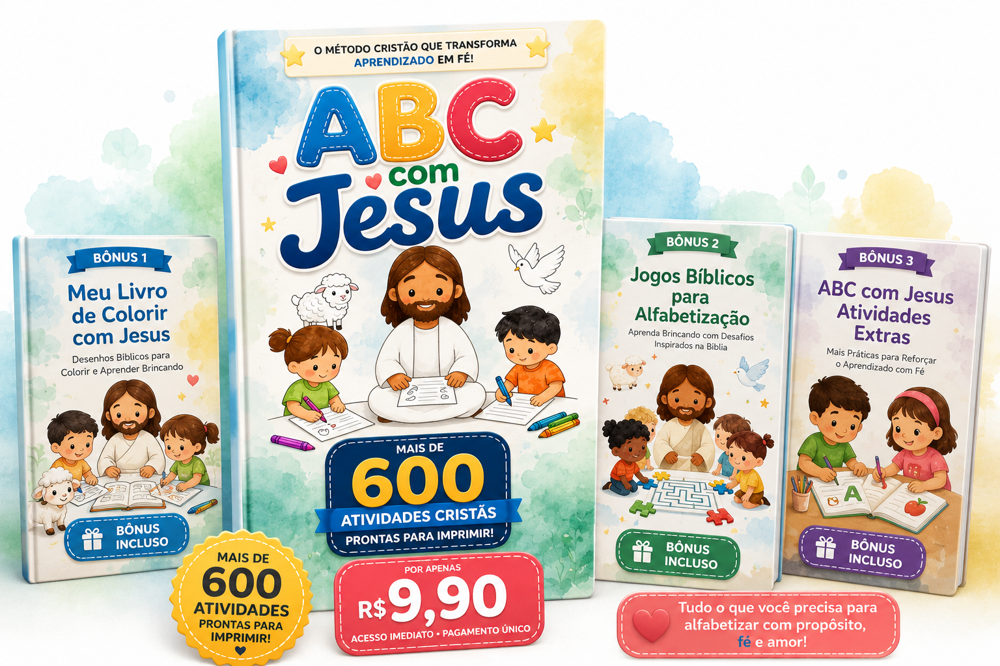
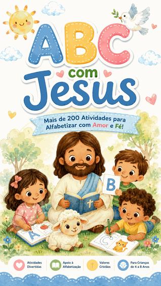
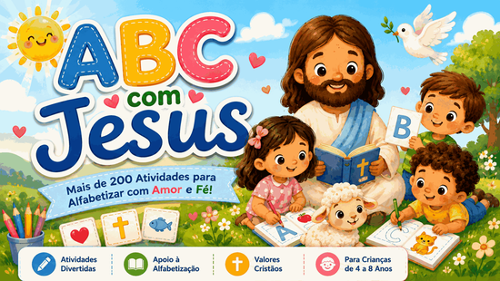
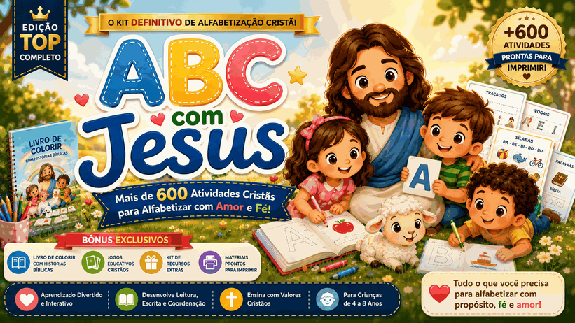
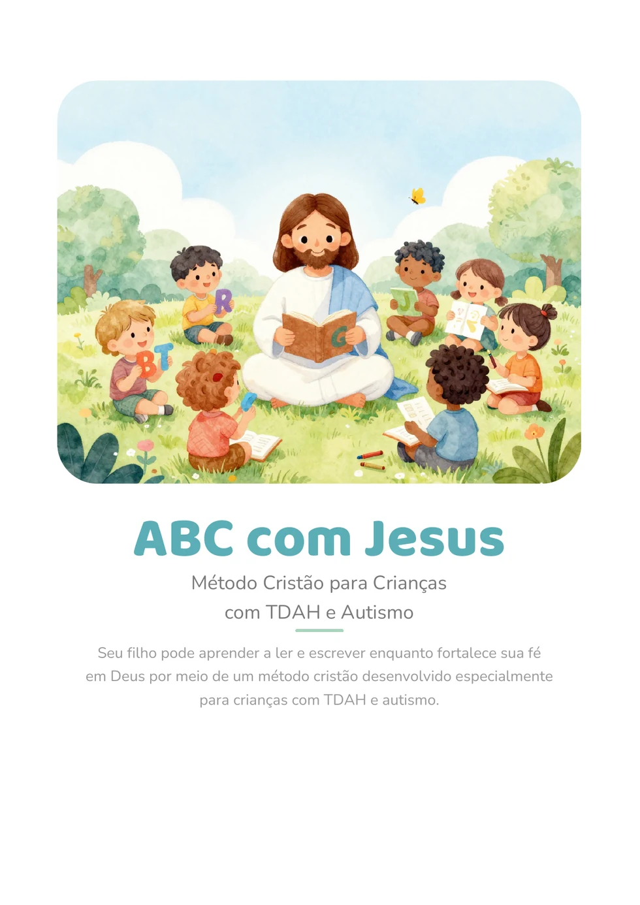
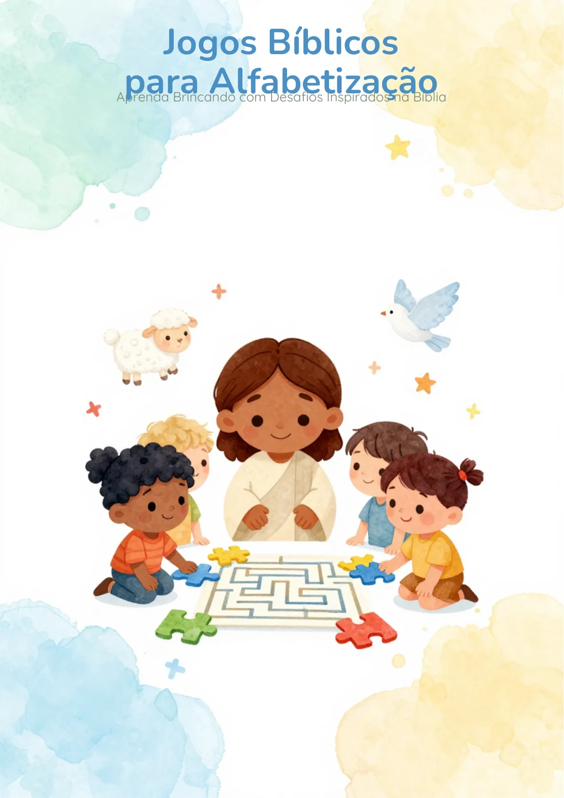
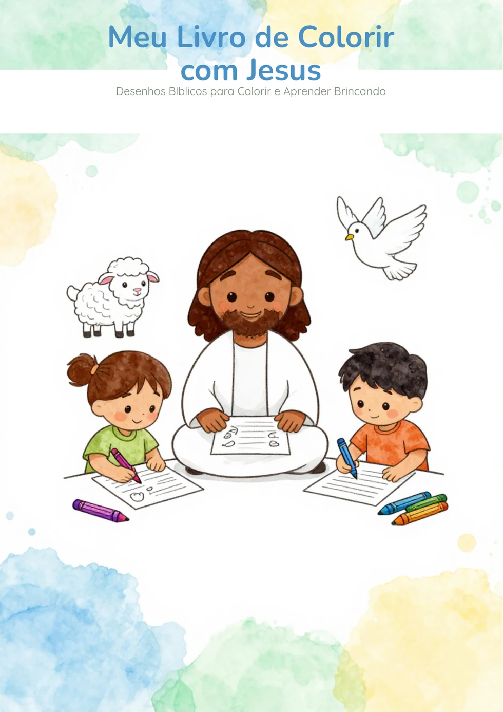

Alfabetização cristã, visual e divertida
Mais de 600 atividades cristãs para seu filho aprender a ler e escrever com fé, carinho e diversão.

O ABC com Jesus reúne atividades digitais prontas para usar no celular, tablet ou computador — e imprimir quando quiser. Um material completo para transformar a alfabetização em um momento de aprendizado, conexão e propósito.
- Mais de 600 atividades cristãs
- Material digital e imprimível
- Acesso vitalício
- Funciona no celular, tablet e computador
QUERO VER OS PRODUTOS E ESCOLHER O MELHOR
Veja a opção básica e a completa antes de comprar
Acesso imediato após a compra
Imprime e usa na mesma sessão
Organizado por demanda clínica
Funciona online e presencial
Resumo visual da oferta
Números claros para você entender o material em poucos segundos
Quando ensinar fica pesado
Ensinar a ler não precisa ser uma experiência cansativa.
Muitas pessoas possuem capacidade para aprender, mas não se adaptam a materiais longos, confusos ou pouco envolventes.
Falta de atenção
Atividades longas e com excesso de informações podem tornar o aprendizado cansativo e difícil de manter.
Desinteresse
Quando o material não possui cores, histórias ou atividades práticas, aprender pode parecer apenas mais uma obrigação.
Métodos complicados
Nem todas as famílias e educadores possuem tempo para preparar atividades ou criar um planejamento do zero.
Pouca praticidade
Procurar atividades separadas todos os dias pode tornar a rotina de alfabetização desorganizada.
Falta de materiais cristãos
Muitas famílias desejam ensinar leitura e escrita sem deixar de lado a fé e os valores cristãos.
Ritmos diferentes
Cada pessoa aprende em um tempo diferente e pode precisar repetir uma mesma atividade várias vezes.
A dificuldade não significa falta de capacidade. Muitas vezes, o que falta é uma forma mais simples, visual e acolhedora de aprender.
Quero conhecer uma nova forma de ensinar
Uma solução prática
Conheça o ABC com Jesus
O ABC com Jesus reúne alfabetização e fé cristã em um material digital simples de usar, com atividades que podem ser visualizadas na tela ou impressas para acompanhar o ritmo de cada pessoa.
Cada letra é apresentada de maneira visual, com palavras cristãs, separação silábica, frases de fé, exercícios de escrita, leitura e atividades práticas.
Uma letra por vez
O conteúdo pode ser trabalhado gradualmente, respeitando o tempo e as necessidades de cada pessoa.
Aprendizado visual
Ilustrações, cores, letras grandes e atividades práticas ajudam a tornar o conteúdo mais envolvente.
Conteúdo cristão
As atividades apresentam palavras, valores e mensagens inspiradas nos ensinamentos de Jesus.
Pronto para imprimir
Baixe o material, escolha as páginas e imprima sempre que desejar. Pode ser utilizado em casa, na igreja, na escola, em atendimentos ou em momentos de estudo individual.
Demonstração do material
Veja como o aprendizado acontece
Uma amostra com páginas dos produtos principais e dos bônus para mostrar melhor tudo o que entra no pacote.

1. Material
Atividades visuais de leitura e escrita para começar a alfabetização com mais clareza e prática guiada.

2. Mais prática
Exercícios que reforçam formação, repetição e reconhecimento de escrita de forma leve e organizada.

3. Conteúdo do completo
No pacote completo, entram mais atividades para ampliar coordenação, atenção e variedade no processo.

4. Bônus extras
Os bônus ajudam a expandir o uso do material com novas propostas de reforço e continuidade.

5. Aprendizado complementar
Jogos e materiais bônus deixam a rotina mais rica, variada e envolvente sem perder a proposta cristã.
O que você recebe
Um material completo para apoiar a alfabetização
Você recebe materiais digitais prontos para baixar, salvar, imprimir e usar quantas vezes quiser.
ABC com Jesus
ABC com Jesus com mais de 200 atividades para ensinar a ler e escrever de forma visual, leve e prática.
Uso flexível
Abra no celular, tablet ou computador e escolha as páginas que deseja imprimir.
ABC com Jesus Completo
ABC com Jesus Completo com mais de 600 atividades, materiais extras e bônus para uma experiência mais completa.
Acesso vitalício
Depois da compra, os materiais podem ser salvos nos seus dispositivos e usados sempre que necessário.
Para quem é
Feito para famílias, educadores e diferentes ritmos de aprendizagem
Mães e pais
Responsáveis
Professores e pedagogos
Igrejas e escolas cristãs
Profissionais de apoio
Famílias de crianças com TDAH
Famílias de crianças autistas
Jovens, adultos e idosos em alfabetização
Comparação clara
Mais leve do que métodos tradicionais difíceis de adaptar
Sem promessas irreais. A proposta é oferecer um caminho mais visual, acolhedor e prático para complementar o processo de alfabetização.
Métodos tradicionais
- Podem ser longos e pouco envolventes
- Nem sempre conversam com a rotina da família
- Costumam exigir adaptação diária
- Raramente unem alfabetização e fé cristã
ABC com Jesus
- Visual, organizado e fácil de retomar
- Pronto para usar em casa, na escola ou na igreja
- Materiais digitais imprimíveis com atividades claras
- Une leitura, escrita e valores cristãos com leveza
Produtos e preços
Escolha a opção que faz mais sentido para sua rotina
Escolha entre a versão de entrada ou o pacote mais completo com bônus inclusos.
ABC com Jesus
Mais de 200 atividades para ensinar a ler e escrever
Uma opção acessível, prática e visual para começar o processo de alfabetização com materiais digitais cristãos.
De R$ 29,90
R$ 9,90
ou até 6x de R$ 1,65
Economia real de R$ 20,00
- Mais de 200 atividades para ensinar a ler e escrever
- Materiais digitais prontos para usar
- Uso em celular, tablet e computador
- Acesso vitalício
- Pagamento único
- Garantia de 7 dias
De R$ 29,90 por apenas R$ 9,90
Pix • Cartão • Google Pay
ABC com Jesus Completo
Mais de 600 atividades para ensinar a ler e escrever
A versão mais completa, com mais materiais principais e 3 bônus para quem quer uma solução mais robusta de uma vez.
De R$ 59,90
R$ 27,90
ou até 6x de R$ 4,65
Economia real de R$ 32,00 + bônus incluídos sem custo adicional
- Mais de 600 atividades para ensinar a ler e escrever
- 3 bônus inclusos
- Mais variedade de atividades e exercícios
- Acesso vitalício
- Pagamento único com garantia de 7 dias
De R$ 59,90 por apenas R$ 27,90
Pix • Cartão • Google Pay
Bônus do pacote completo
No pacote completo, você também recebe
Três materiais bônus para ampliar as possibilidades de aprendizado, brincadeira e reforço visual em casa, na escola ou na igreja.
Bônus incluso no completo
ABC com Jesus de A-Z
Um material com letras, palavras cristãs, escrita guiada e associação visual para reforçar o alfabeto de A a Z com leveza e significado.
- Alfabeto completo de A a Z
- Palavras e referências cristãs
- Atividades visuais e imprimíveis
Bônus incluso no completo
Jogos Bíblicos para Alfabetização
Desafios e brincadeiras inspirados na Bíblia para reforçar leitura, associação, raciocínio e descoberta de palavras de forma divertida.
- Jogos de alfabetização cristã
- Desafios leves e interativos
- Uso complementar e imprimível

Bônus incluso no completo
Livro de Colorir Cristão
Um livro de colorir cristão para trabalhar coordenação, criatividade, familiaridade com cenas bíblicas e momentos tranquilos de reforço.
- Desenhos bíblicos para colorir
- Reforço visual e coordenação
- Momentos leves de aprendizado
Os 3 bônus acompanham o pacote completo sem custo adicional.
Depoimentos reais
Mensagens de quem já está usando o material
Prova social baseada em prints enviados, sem avaliações inventadas e sem números fictícios.


Compra com tranquilidade
Garantia de 7 dias
Depois da compra, você terá 7 dias para acessar e conhecer o material. Caso perceba que ele não atende às suas necessidades, poderá solicitar o reembolso pelos canais disponibilizados pela plataforma de pagamento.
- Compra segura
- Entrega digital
- Processamento pela plataforma Wiapy
- Sem promessas exageradas
Perguntas frequentes
O que você precisa saber antes de comprar
O material pode ser utilizado por crianças, jovens, adultos e idosos em diferentes níveis de alfabetização. A escolha das atividades deve considerar o ritmo e as necessidades de cada pessoa.
Sim. O material é digital e pode ser aberto no celular, tablet ou computador.
Não. O produto é composto por materiais digitais. Você poderá baixar os arquivos e abrir normalmente no celular, tablet ou computador.
Sim. As atividades foram pensadas para serem visualizadas na tela ou impressas sempre que necessário.
Os materiais podem ser utilizados como recurso educacional complementar em diferentes rotinas de aprendizagem. O conteúdo não substitui acompanhamento profissional e deve ser adaptado às necessidades de cada criança.
Os materiais podem ser utilizados de acordo com as necessidades da criança, sempre como apoio complementar. O conteúdo não substitui acompanhamento profissional e pode ser adaptado pela família ou educador.
O ABC com Jesus é a versão de entrada, com mais de 200 atividades. O ABC com Jesus Completo reúne mais de 600 atividades e ainda inclui os bônus ABC com Jesus de A-Z, Jogos Bíblicos para Alfabetização e Livro de Colorir Cristão.
Sim. A compra possui garantia de 7 dias, conforme as regras e canais disponibilizados pela plataforma de pagamento.
Depois da confirmação do pagamento, a entrega é realizada pela plataforma Wiapy.